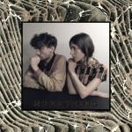
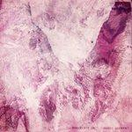
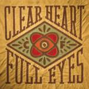

Music Reviews
-
The 2 Bears Be Strong
The modus operandi of The 2 Bears - AKA Hot Chip's Joe Goddard and DJ Raf Daddy - is to create intelligent, nostalgic club music while wearing tatty-looking fancy dress costumes. Of course the end result is going to be a whole load of fun.
Mark Davison wants to give them a bear hug... -

Chairlift Something
Down one band member, but with plenty time to craft their songs, Chairlift's sophomore album trades its pleasance for adventure and find itself at a respectable endpoint.
Forrest Cardamenis reviews... -

Porcelain Raft Strange Weekend
Another Brooklyn indie artist welcomes us with a pretty package, but is the gift as good as the presentation?
Forrest Cardamenis dreams of a... -
Trailer Trash Tracys Ester
A debut album from the London based quartet that references Twin Peaks, Cocteau Twins and MBV? What's not to like?
David John Wood reviews... -

Craig Finn Clear Heart Full Eyes
Craig Finn's first venture without The Hold Steady reveals a quieter, more contemplative side - and the new direction rarely disappoints.
Joel Stanier reviews... -
Rodrigo y Gabriela Area 52
Having spent the last ten years as the missing link between Segovia and Metallica, guitar-slinging duo Rodrigo y Gabriela have now decided to branch out into the field of 'latin' music. But, beneath the Cuban-inspired horns and piano arrangements, is it just business as usual?
Mark Davison feels like he's heard this before... -
Matthew Dear Headcage EP
Making countless year-end lists in 2010 for Black City, Matthew Dear delivers a glimpse into what the future holds for this antagonist of generic electronica.
David Hogg reviews... -
Standard Fare Out Of Sight, Out Of Town
Second album from the Sheffield pop-punk trio starts well, but is ultimately lacking in inventiveness.
Joel Stanier reviews... -
Various Artists East of Underground: Hell Below
A significant historical document is finally released. But is the music worth hearing?
Alan Shulman reviews -

Cloud Nothings Attack on Memory
Dylan Bandi's second full-length album has been much publicized as his dark record, but beneath the sludgy exterior lays the same penchant for hooky pop tunes.
Juan Edgardo Rodríguez forgets everything...